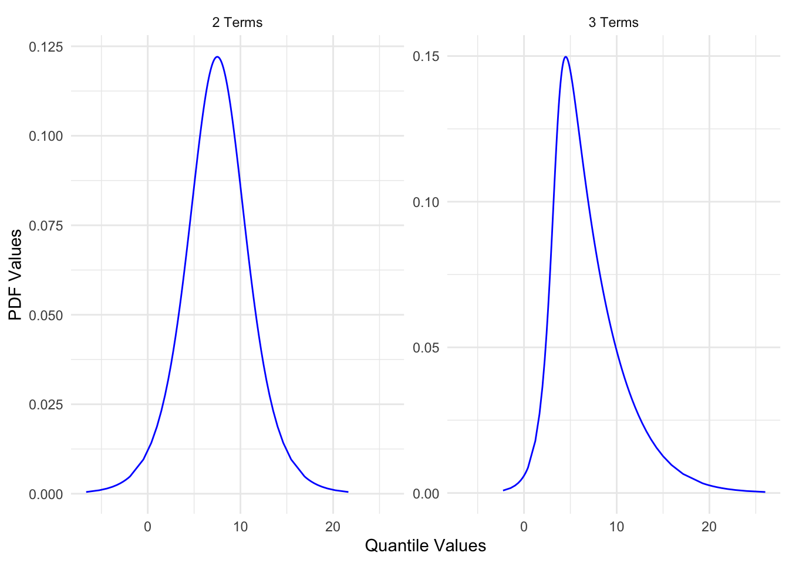
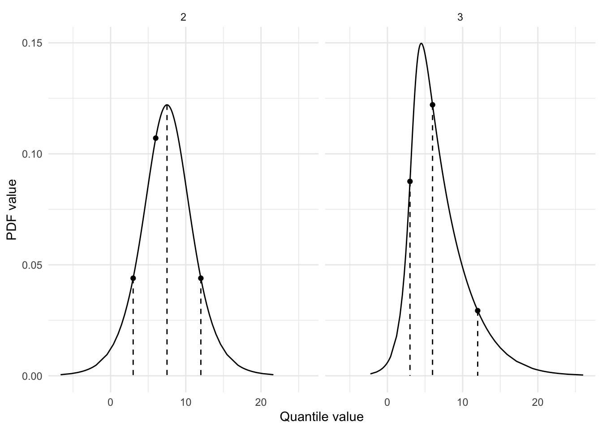
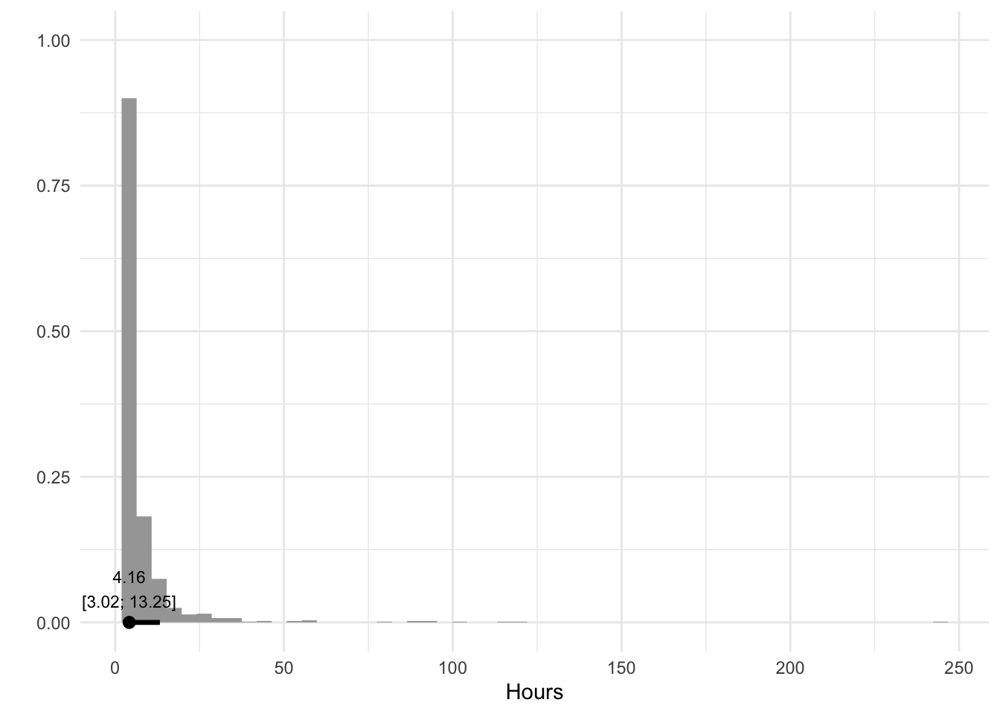

I recently discovered the metalog distribution via MakeDistribution. According to Wikipedia, the metalog distribution “is a flexible continuous probability distribution designed for ease of use in practice”. A distribution that was designed to be easy to use peaked my interest, so in this blog post I try to figure out how to use it and determine whether it is indeed a useful and easy to use distribution.
Run the setup code below in case you want to follow along.
A common problem with working with distributions is that you need to know which distribution to use for which use-case and then shape the distribution to your liking by giving the distribution’s parameters the right values. In some cases this is fairly straightforward, like when you want to model something as a normal distribution with a certain mean and standard deviation.
But what if you want to model, say, how long you think a particular task will take in hours? Here a normal distribution is not well suited and instead you have to use something else, perhaps a Gamma distribution or a lognormal distribution. These distributions take parameters other than a mean and standard deviation and they don’t have much intuitive meaning (at least not to me).
Using the metalog distribution
The metalog distribution changes all of that because you can simply specify the distribution by giving it a set of quantile-value pairs that are used to form the distribution.
For example, let’s specify three quantile-value pairs below and see how they shape the distribution.
We use the rmetalog package, which has a function called metalog() to create the distribution. We give it the values, the quantiles, and a term limit. The latter refers to how many terms are used in the distribution, with larger term distributions having more flexibility, meaning they better match the quantile-value pairs. The maximum number of terms is the number of quantile-value pairs we give it, so in the example below the maximum is 3.
-----------------------------------------------
Summary of Metalog Distribution Object
-----------------------------------------------
Parameters
Term Limit: 3
Term Lower Bound: 2
Boundedness: u
Bounds (only used based on boundedness): 0 1
Step Length for Distribution Summary: 0.01
Method Use for Fitting: any
Number of Data Points Used: 3
Original Data Saved: FALSE
Validation and Fit Method
term valid method
2 yes Linear Program
3 yes Linear Program
Using summary() on the output of metalog() gives us some information about the distribution, but it doesn’t seem particularly useful to me, so let’s move on to visualizing the distribution using the plot() function. Unfortunately, using plot() on the output returns two plots—one showing the probability density function (PDF) and the other one showing the cumulative density function (CDF). I prefer looking at the PDF, so that’s the one I extract and plot below.
Code
p <-plot(metalog) |>use_series("pdf")p

This shows us two PDF plots. By default the metalog function creates multiple distributions with a different number of terms. In this case, we get one with two terms and one with three terms. The graph with three terms matches exactly the quantile-value pairs we specified but the one with two terms doesn’t, which I’ll show below by calculating the PDFs at specific quantile values manually using dmetalog() and qmetalog(), which are equivalents of functions like dnorm() and qnorm(). I also use some custom functions I loaded in the setup code to extract the metalog values (quantile values and PDF values) as a data frame and plot them using ggplot().
Code
points <-tibble(quantile_value = values,pdf_value_2 =dmetalog(metalog, quantile_value, term =2),pdf_value_3 =dmetalog(metalog, quantile_value, term =3))lines <-tibble(quantile_value_2 =qmetalog(metalog, quantiles, term =2),quantile_value_3 =qmetalog(metalog, quantiles, term =3),pdf_value_2 =dmetalog(metalog, quantile_value_2, term =2),pdf_value_3 =dmetalog(metalog, quantile_value_3, term =3),)points <- points |>pivot_longer(cols =-quantile_value,names_to ="term",values_to ="pdf_value",names_transform = parse_number )lines <- lines |>pivot_longer(cols =everything(),names_to =c(".value", "term"),names_pattern ="(.+_.+)_([1-9]+)" ) |>mutate(term =as.numeric(term))df <-metalog_to_df(metalog)ggplot(df, aes(x = quantile_value, y = pdf_value)) +facet_wrap(~term) +geom_segment(data = lines, aes(yend =0), linetype ="dashed") +geom_line() +geom_point(data = points) +labs(x ="Quantile value", y ="PDF value")

The points show what the PDF values are at each of the quantiles we specified (0.10, 0.50, and 0.90). The lines show the correct quantile-value pairs (e.g., at quantile value 6 the total area of the curve before that value should be 50%). We see that the distribution with three terms perfectly matches our quantile-value pairs while the one with two terms doesn’t. The one with two terms has two correct quantile-value pairs (at 3 and 12), but one incorrect one (at 6). I suppose this means that the distribution with the most terms will be a closer match to the specified quantile-value pairs.
This is cool, though. By simply specifying three quantile-value pairs, we obtained a distribution that matches those values, in this case exactly. This means it becomes much easier to specify a distribution to your liking.
Does the distribution always match the specified quantile-value pairs?
Apparently, the answer is no. We can quickly check this using the qmetalog() function to see whether it produces the same values we provided as part of the quantile-value pairs. In the example below we set the values to 3, 6, and 12, and the quantiles to 0.1, 0.5, and 0.9. After running the the metalog() function, we can use the qmetalog() function to reproduce the values after giving it the output of the metalog() function and the quantiles.
In this example, the function returns the same values we specified in the values variable, which means the distribution is a match. But let’s slightly change the values in the quantile-value pairs and check it again, for example by giving it the values 3, 4, and 12.
Now the function returns values that are slightly different than the values we provided, so the distribution is not an exact match. This makes sense because the distribution is not fully customizable; it still has some constraints that limits its flexibility.
If you want to use a distribution that is fully flexible, you have to use other solutions. One such solution is MakeDistribution. They offer other types of distributions that can exactly match the quantile-value pairs, although it’s not fully free to use. They also have an R package to access the (paid) API.
Boundedness
The metalog distribution also supports setting bounds on the distribution. This means you can specify what the minimum and/or maximum value should be. Below I modify our existing metalog distribution by specifying a lower bound of 0.
With the distribution specified to our liking, we can simulate values from the distribution using the rmetalog() function. In the code below I simulate 1000 values from the distribution and turn the values into a data frame to plot them as a histogram. I also calculate the quantile values at 10%, 50%, and 90%, which should roughly match the values we specified previously (3, 6, and 12).
Code
hours <-rmetalog(metalog, n =1000, term =3)df <-tibble(hour = hours)median_qi <-median_qi(hours, .width = .8)ggplot(df, aes(x = hour)) +stat_histinterval(.width = .8) +geom_label(data = median_qi,aes(label =format_interval(median_qi), x = y, y =0),size =3,vjust =0, fill ="transparent",label.size =0, label.padding =unit(0.75, "lines") ) +labs(x ="Hours", y ="")

Excellent, we now have a distribution that you could say represents the number of hours to complete a task. We could use this to model how long a project would take to complete by creating separate distributions for each task, sampling values from them, and then summing them together to get a view of how long it will take to complete the project.
Summary
The metalog distribution makes it easy to specify a distribution using only quantile-value pairs. You can use the metalog() function from the the rmetalog package to specify the distribution, including whether the distribution is bounded or not, and then simulate values from this distribution using the rmetalog() function.
This post was last updated on 2024-07-18.
Source Code
---title: "The metalog distribution"date: 2024-04-09categories: - statistics - distributions - simulationcode-tools: truecode-fold: show---I recently discovered the metalog distribution via [MakeDistribution](https://makedistribution.com/). According to [Wikipedia](https://en.wikipedia.org/wiki/Metalog_distribution), the metalog distribution "is a flexible continuous probability distribution designed for ease of use in practice". A distribution that was designed to be easy to use peaked my interest, so in this blog post I try to figure out how to use it and determine whether it is indeed a useful and easy to use distribution.Run the setup code below in case you want to follow along.```{r}#| label: setup#| message: false#| code-fold: truelibrary(tidyverse)library(rmetalog)library(magrittr)library(ggdist)theme_set(theme_minimal())metalog_to_df <-function(x) { metalog |> magrittr::use_series("M") |> tibble::as_tibble() |> tidyr::pivot_longer(cols =-y,names_to =c(".value", "term"),names_pattern ="(.)([1-9+])" ) |> dplyr::mutate(term =as.numeric(term)) |> dplyr::rename(quantile_value = M,pdf_value = m )}format_label <-function(x, digits =2) {trimws(format(round(x, digits), nsmall = digits))}format_interval <-function(x, digits =2) {paste0(format_label(x$y, digits = digits), "\n[",format_label(x$ymin, digits = digits), "; ",format_label(x$ymax, digits = digits), "]" )}```## The problem with distributionsA common problem with working with distributions is that you need to know which distribution to use for which use-case and then shape the distribution to your liking by giving the distribution's parameters the right values. In some cases this is fairly straightforward, like when you want to model something as a normal distribution with a certain mean and standard deviation.But what if you want to model, say, how long you think a particular task will take in hours? Here a normal distribution is not well suited and instead you have to use something else, perhaps a Gamma distribution or a lognormal distribution. These distributions take parameters other than a mean and standard deviation and they don't have much intuitive meaning (at least not to me).## Using the metalog distributionThe metalog distribution changes all of that because you can simply specify the distribution by giving it a set of quantile-value pairs that are used to form the distribution.For example, let's specify three quantile-value pairs below and see how they shape the distribution.We use the rmetalog package, which has a function called `metalog()` to create the distribution. We give it the values, the quantiles, and a term limit. The latter refers to how many terms are used in the distribution, with larger term distributions having more flexibility, meaning they better match the quantile-value pairs. The maximum number of terms is the number of quantile-value pairs we give it, so in the example below the maximum is 3.```{r}#| label: metalog-distribution-summaryvalues <-c(3, 6, 12)quantiles <-c(0.1, 0.5, 0.9)metalog <-metalog(x = values,prob = quantiles,term_limit =3,)summary(metalog)```Using `summary()` on the output of `metalog()` gives us some information about the distribution, but it doesn't seem particularly useful to me, so let's move on to visualizing the distribution using the `plot()` function. Unfortunately, using `plot()` on the output returns two plots—one showing the probability density function (PDF) and the other one showing the cumulative density function (CDF). I prefer looking at the PDF, so that's the one I extract and plot below.```{r}#| label: metalog-distribution-plot#| code-fold: truep <-plot(metalog) |>use_series("pdf")p```This shows us two PDF plots. By default the metalog function creates multiple distributions with a different number of terms. In this case, we get one with two terms and one with three terms. The graph with three terms matches exactly the quantile-value pairs we specified but the one with two terms doesn't, which I'll show below by calculating the PDFs at specific quantile values manually using `dmetalog()` and `qmetalog()`, which are equivalents of functions like `dnorm()` and `qnorm()`. I also use some custom functions I loaded in the setup code to extract the metalog values (quantile values and PDF values) as a data frame and plot them using `ggplot()`.```{r}#| label: metalog-distribution-check#| code-fold: truepoints <-tibble(quantile_value = values,pdf_value_2 =dmetalog(metalog, quantile_value, term =2),pdf_value_3 =dmetalog(metalog, quantile_value, term =3))lines <-tibble(quantile_value_2 =qmetalog(metalog, quantiles, term =2),quantile_value_3 =qmetalog(metalog, quantiles, term =3),pdf_value_2 =dmetalog(metalog, quantile_value_2, term =2),pdf_value_3 =dmetalog(metalog, quantile_value_3, term =3),)points <- points |>pivot_longer(cols =-quantile_value,names_to ="term",values_to ="pdf_value",names_transform = parse_number )lines <- lines |>pivot_longer(cols =everything(),names_to =c(".value", "term"),names_pattern ="(.+_.+)_([1-9]+)" ) |>mutate(term =as.numeric(term))df <-metalog_to_df(metalog)ggplot(df, aes(x = quantile_value, y = pdf_value)) +facet_wrap(~term) +geom_segment(data = lines, aes(yend =0), linetype ="dashed") +geom_line() +geom_point(data = points) +labs(x ="Quantile value", y ="PDF value")```The points show what the PDF values are at each of the quantiles we specified (0.10, 0.50, and 0.90). The lines show the correct quantile-value pairs (e.g., at quantile value 6 the total area of the curve before that value should be 50%). We see that the distribution with three terms perfectly matches our quantile-value pairs while the one with two terms doesn't. The one with two terms has two correct quantile-value pairs (at 3 and 12), but one incorrect one (at 6). I suppose this means that the distribution with the most terms will be a closer match to the specified quantile-value pairs.This is cool, though. By simply specifying three quantile-value pairs, we obtained a distribution that matches those values, in this case exactly. This means it becomes much easier to specify a distribution to your liking.## Does the distribution always match the specified quantile-value pairs?Apparently, the answer is no. We can quickly check this using the `qmetalog()` function to see whether it produces the same values we provided as part of the quantile-value pairs. In the example below we set the values to 3, 6, and 12, and the quantiles to 0.1, 0.5, and 0.9. After running the the `metalog()` function, we can use the `qmetalog()` function to reproduce the values after giving it the output of the `metalog()` function and the quantiles.```{r}#| label: metalog-distribution-match#| code-fold: truevalues <-c(3, 6, 12)quantiles <-c(0.1, 0.5, 0.9)metalog <-metalog(x = values,prob = quantiles,term_limit =3,)qmetalog(metalog, quantiles, term =3)```In this example, the function returns the same values we specified in the `values` variable, which means the distribution is a match. But let's slightly change the values in the quantile-value pairs and check it again, for example by giving it the values 3, 4, and 12.```{r}#| label: metalog-distribution-mismatch#| code-fold: truevalues <-c(3, 4, 12)quantiles <-c(0.1, 0.5, .9)metalog <-metalog(x = values,prob = quantiles,term_limit =3,)qmetalog(metalog, quantiles, term =3)```Now the function returns values that are slightly different than the values we provided, so the distribution is not an exact match. This makes sense because the distribution is not fully customizable; it still has some constraints that limits its flexibility.If you want to use a distribution that is fully flexible, you have to use other solutions. One such solution is [MakeDistribution](https://makedistribution.com/). They offer other types of distributions that can exactly match the quantile-value pairs, although it's not fully free to use. They also have an [R package](https://github.com/tadamcz/make_distribution_r_client) to access the (paid) API.## BoundednessThe metalog distribution also supports setting bounds on the distribution. This means you can specify what the minimum and/or maximum value should be. Below I modify our existing metalog distribution by specifying a lower bound of 0.```{r}#| label: metalog-distribution-boundedmetalog <-metalog(x = values,prob = quantiles,term_limit =3,boundedness ="sl",bound =0)df <-metalog_to_df(metalog)df |>filter(term ==3) |>ggplot(aes(x = quantile_value, y = pdf_value)) +geom_line() +labs(x ="Quantile value", y ="PDF value")```The distribution now starts at 0, perfect.## SimulationWith the distribution specified to our liking, we can simulate values from the distribution using the `rmetalog()` function. In the code below I simulate 1000 values from the distribution and turn the values into a data frame to plot them as a histogram. I also calculate the quantile values at 10%, 50%, and 90%, which should roughly match the values we specified previously (3, 6, and 12).```{r}#| label: metalog-distribution-simulationhours <-rmetalog(metalog, n =1000, term =3)df <-tibble(hour = hours)median_qi <-median_qi(hours, .width = .8)ggplot(df, aes(x = hour)) +stat_histinterval(.width = .8) +geom_label(data = median_qi,aes(label =format_interval(median_qi), x = y, y =0),size =3,vjust =0, fill ="transparent",label.size =0, label.padding =unit(0.75, "lines") ) +labs(x ="Hours", y ="")```Excellent, we now have a distribution that you could say represents the number of hours to complete a task. We could use this to model how long a project would take to complete by creating separate distributions for each task, sampling values from them, and then summing them together to get a view of how long it will take to complete the project.## SummaryThe metalog distribution makes it easy to specify a distribution using only quantile-value pairs. You can use the `metalog()` function from the the rmetalog package to specify the distribution, including whether the distribution is bounded or not, and then simulate values from this distribution using the `rmetalog()` function.*This post was last updated on `r format(Sys.Date(), "%Y-%m-%d")`.*